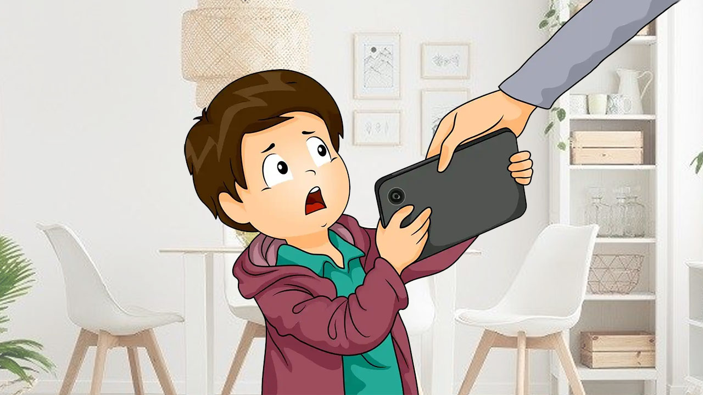
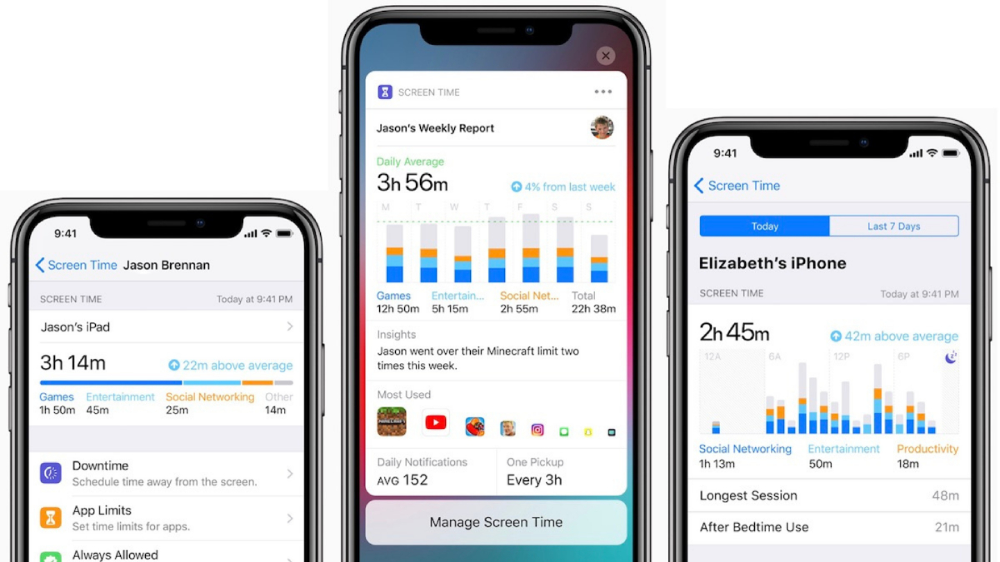

Ekran Süresi Yönetimi
Teknoloji hayatımızın bir parçası. Ancak ekran başında geçirilen uzun süreler, sağlığımızı ve yaşam kalitemizi etkileyebilir. Ekran süresi yönetimiyle dijital dengeni kur!
Neden Ekran Süresi Yönetimi Önemlidir?
- Göz yorgunluğu ve baş ağrısını önler.
- Duruş bozukluklarını engeller.
- Zihinsel yorgunluğu azaltır.
- Uyku düzenini korur.
Ekran Süresi Yönetimi İpuçları
- Dijital Denge ve Ekran Süresi özelliklerini aktif kullan.
- Her 30 dakikada bir mola ver.
- Uyku öncesi cihazları kapat.
- Yüz yüze sosyal etkinliklere zaman ayır.

CyberZlıyan Tavsiyeleri
- Dijital molalar oluşturun.
- 20-20-20 kuralını uygulayın.
- Dijital Denge raporlarını düzenli takip edin.

Unutmayın: Dijital dengede kalın, göz sağlığınızı ve zihinsel enerjinizi koruyun!